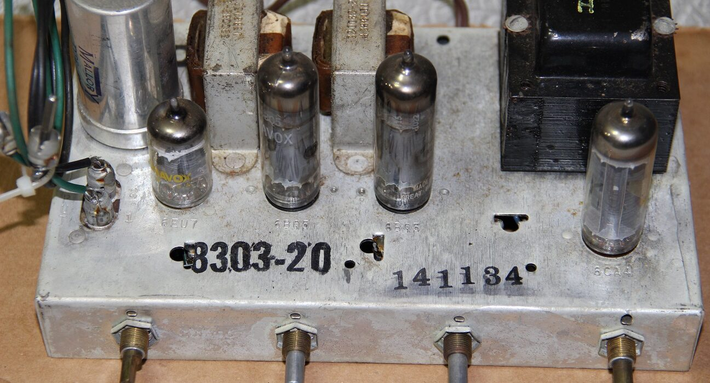
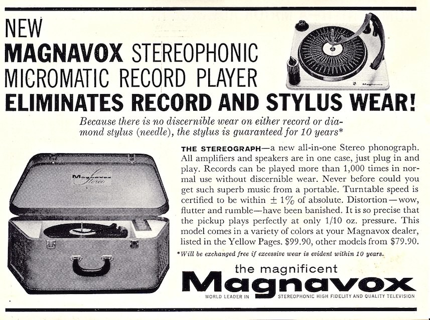
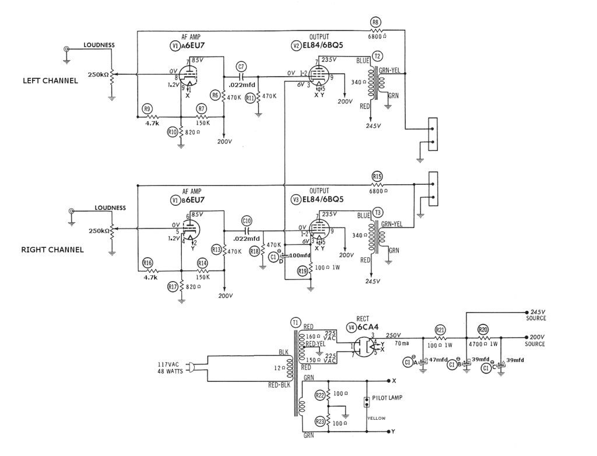

I reactivated my blog after many years because I want a place to record thoughts, lessons learned, data – about the projects I’m working on. The reason I started a website in the first place was not for commercial purposes, but to give back to the internet community from which I learned so much. There is an appalling dearth of honest, original content on the interwebs these days. I aim to change that. This is my first post, and will ramble some, but I promise future installments will be more about details and photo documentation.
Many years ago, my grandmother gave me a record player. It was a suitcase style, like the one pictured here. Same brand: Magnavox. It did not work in any way shape or form. Oh, it made buzzy sounds when you plugged it in, but the turntable didn’t spin and the tonearm wires were broken. I put it away in the attic for a future project.

I’ve always been mesmerized by records. My parents had a cheap all-in-one stereo with a turntable that I played their scratched up records on, and I am still blown away that dragging a needle across that near-invisible groove can accurately reproduce sound. I had a few records that I bought more as collectibles than anything. And my father bought me another all-in-one record player (TEAC) when I was older, but it never sounded very good. The speed was off and the sound from the tiny speaker pretty lame. So I did not listen to that one for long either, but I always had the desire, I always loved records.
A few years ago, my wife bought me a new turntable for my birthday: a U-Turn Orbit. (I have been very pleased with the Orbit other than the propensity for the belt to stretch when playing at 45 RPMs.) This sent me down an audiophile rabbit hole from which I may never return.
I needed an amplifier. Something that sounded good. After all, I didn’t want to get into vinyl and spend the time, money and effort to hear the same quality music I can get from an iPod. I started searching the internet for recommendations and found that many serious music lovers were using low-powered tube amps in their main stereo systems. The same people who do not think twice about dropping $1000 on speakers were spending as much or more on single-ended, 3-watt per channel, simple tube amps. Well, I’ve been told I’m simple my entire life, so I thought that was the amplifier for me!
Reading the audio forums online informed me that the tube amplifiers included in some Magnavox record players from the 50s and early 60s were very well regarded. With some minor improvement, they could sound as good as real high-fidelity tube amps from the past that now go for hundreds of dollars, and better than the Chinese-made tube amp kits which litter eBay and Amazon.
Could it be? Was I lucky enough for that? I visited my parents’ attic, found where I had stashed the suitcase record player years before, and dug into the bowels of the mechanical beast…yes! It contained one of the single-ended EL84 tube amps that so many agreed had a magical sound. Here it is before I had touched a thing, showing it’s modest origins.
(I’ll try to include minimal narrative and cut to the content here.) I decided to build the tube amp into a stand-alone amplifier that could be connected to pretty much any line-level source and pass a clean signal through to the speakers, but I wanted it to look nice too. Never again did I want to hide the warm glow that helps those electrons jump.
I stripped the amp of nearly all components, polished and clear coated the cadmium (poison) chassis, blued the transformer bell, fabricated a black acrylic face plate, painted output transformer frames, polished capacitor can, added 5-way binding posts, fuse holder, switch, power lamp, and a 1950s style cloth covered power cord. The side pieces are Patagonian rosewood.
But I didn’t just make it pretty. I also replaced every capacitor in the unit, the volume control, and cut out the coloring circuitry for tone control. The schematic is even simpler than before:

I recently had the opportunity to do an A/B comparison with a friend’s newly built Pass-Labs Amp Camp monoblocks. The Magnavox amp held its own. Sure, it had that “tube sound,” a warmth of rolling off highs and lows for a sweet midrange. Compared to the state-of-the-art solid state monoblocks, my tube amp was “muddy.” But compared to the tube amp, the monoblocks were bright and shrill. I’m sure the distortion was much lower on those solid state wonders, but I’m quite proud that the four of us had as much enjoyment listening to my 60 year-old, upgraded tube amp as we did to brand new, high tech solid state hifi gear.
But the amp is not my latest project. Remember that there was a record changer in that suitcase with the amp. I’ve long thought it would be fitting to fix that up too…
Tags: Amplifier, Magnavox, Turntable, Vacuum Tube